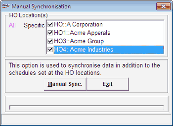

When you have a POS installation which is a part of a business chain then you will have to synchronise the data with the Head Office (HO) periodically. This is usually automated as per the schedule set at HO. In case you wish to synchronise data in addition to the set schedule, from the POS location you can run this option.
Shoper 9 POS has a Scheduler Service that is used to execute the scheduled activities. Click here for more information.
How to reach: Housekeeping > POS-HO Synchronisation > Synchronise Manually
The Manual Synchronisation window is displayed as shown.

HO Location(s): Displays the lists of HO(s) configured for synchronisation. The list will have all HO(s) identified as Shoper 9. You can select one or more HO(s) to which the selected files are to be sent.
Select All or Specific to select HO(s) accordingly.
Note: To successfully complete the consolidation and Replication Data Loading, the necessary data communication setup needs to be done.